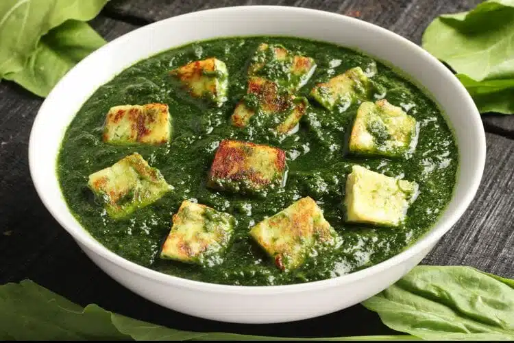

Palak Paneer
Palak Paneer is probably one of the first paneer recipes that got popular in the common Indian households. The amicable combination of spinach and Indian cottage cheese is simply delicious and so healthy that one can hardly resist having it.
Preparation time
- Total: Approximately 30 minutes
- Preparation: 25 minutes
Ingredients
- 100 g Paneer
- 2 bunches Palak (Spinach) 1/2 cup Moong Dal washed
- 1 no Potato peeled and chopped 1/2 cup Onion chopped
- 1 to 2 no Green Chillies
- 1/4 cup Cream
- 1/2 cup Garlic
- 3 nos Tomatoes 1 cup Milk
- 1 tbsp Butter
- 1 tbsp Cornflour dissolved with 1/4 cup milk
- as per taste Salt
Instructions
- step1: Cut the paneer into 1/2 inch cubes and keep aside. Mash and boil the palak in 1 cup water with moong dal and potato for 5 minutes after one whistle in pressure cooker.
- step2: Cool and grind in a mixie. Heat the butter in a pan. Fry the onion.
- step3: Cook for 5 more minutes. Add salt and the paneer pieces.
- step4: Add the garlic and green chillies to it. Add the grated tomatoes and cook for 2 minutes. Add the mashed palak along with the cream and 1 cup milk.
- step5(enjoy): Add the dissolved cornflour with the milk to the paneer. Serve hot with roti or chapati
Nutrition
The table below shows nutritional values per serving without the additional fillings.
| Calories | 330kcal |
|---|---|
| Carbs | 50g |
| Protein | 18g |
| Fat | 7g |